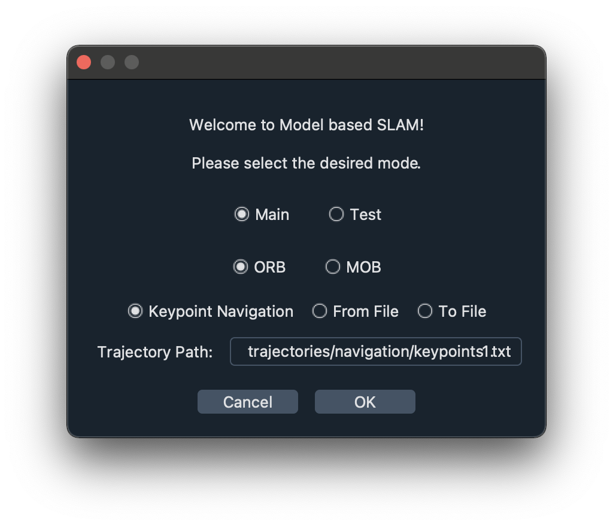

Get going
To open the GUI, step into the source folder and simply run main.py, e.g. via
# pwd==.../Model_based_SLAM
cd src
python3 main.py
or execute the shell script with
# pwd==.../Model_based_SLAM
./run.sh
First a popup dialog will open, allowing you to chose the mode consisting of the GUI layout, SLAM version, and navigation mode.

The two options for the GUI layout are:
-
Main: the intended final layout consisting of- option bar (very top)
- real world view (top left)
- simulated view (bottom left)
- SLAM results plot (top right)
- feature graph window (bottom right)
In this mode all the widgets are fixed in space and all the relevant information is visible at all times.
-
Test: a layout that allow for more user configuration consisting of- option bar (very top)
- real world view (left)
- SLAM results plot (right, currently in the front)
- feature graph window (right, in the back)
This mode was designed specifically for the considered case, that is real world and simulated environment are basically the same. Here the two plots on the right are (un)dockable and can be resized and reorganized to some degree.
The two options for the SLAM version refer to the algorithm that is used for the scene reconstruction and position estimation:
ORB: the standard ORB-SLAM implemented in MATLABMOB: the Model-based SLAM to keep track of deformations
Note: Keep in mind that the Model-based SLAM, at least at its current stage, is quite slow compared to ORB-SLAM and does not guarantee good results in the presence of large deformations.
Click Ok and the GUI will open.
For details on the different elements visible and their functionalities, please refer to gui.md.
Happy mapping!